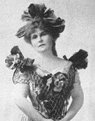

Thursday, June the 8th, 2006
back to: title, date or indexes
Last week, outside a semi-derelict tin kiosk perched on the brow of Pang Hill, our favourite octogenarian crone Mrs Gubbins announced the Hooting Yard Music Prize 2006. Here is a transcript of her speech, from which various interruptions (hacking cough, drooling, unexplained shrieks) have been excised:
The rules for the Hooting Yard Music Prize this year are so simple that even the snivelling infants chained up in Pang Hill Orphanage will be able to understand them. Rule One is that the entries should be musical settings of words taken from anywhere on the Hooting Yard website. That includes all the quotations from other writers with which each bulletin begins. Rule Two is that entries should aspire to sound like the piece of music described by Marie Corelli in The Sorrows Of Satan (1895). I quote:

Marie Corelli
“The music swelled into passionate cadence—melodies crossed and re-crossed each other like rays of light glittering among green leaves—voices of birds and streams and tossing waterfalls chimed in with songs of love and playful merriment; anon came wilder strains of grief and angry clamour; cries of despair were heard echoing through the thunderous noise of some relentless storm, farewells everlastingly shrieked amid sobs of reluctant shuddering agony; and then, as I listened, before my eyes a black mist gathered slowly, and I thought I saw great rocks bursting asunder into flame, and drifting islands in a sea of fire—faces, wonderful, hideous, beautiful, peered at me out of a darkness denser than night, and in the midst of this there came a tune, complete in sweetness and suggestion—a piercing, sword-like tune that plunged into my very heart and rankled there—my breath failed me, my senses swam, I felt that I must move, speak, cry out, and implore that this music, this horribly insidious music should cease ere I swooned with the voluptuous poison of it—when, with a full chord of splendid harmony that rolled out upon the air like a breaking wave, the intoxicating sounds ebbed away into silence. No one spoke—our hearts were yet beating too wildly with the pulsations roused by that wondrous lyric storm. Diana Chesney was the first to break the spell. 'Well, that beats everything I've ever heard!' she murmured tremulously.”
Before you start to complain that one can hardly affix an exclamation mark to a murmur, tremulous or otherwise, I want you to reread those two rules. That is all you need to know. So pick up your viol or banjo or sackbut or what have you, choose some words from the Hooting Yard website, and set to work as if your life depended upon it!
Insignificant details such as closing date, judging panel, prize etc will follow.
Hooting Yard on the Air, May the 31th, 2006 : “Fort Hoity” (starts around 04:14)